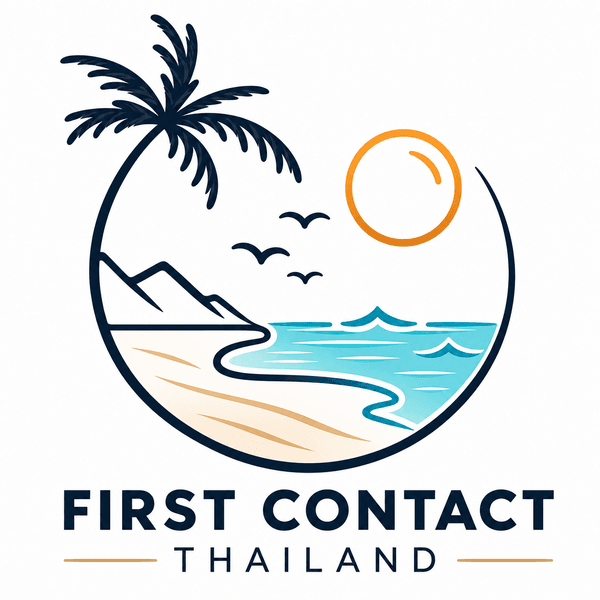

Sponsor
First Contact Thailand
Community partner supporting Koh Samui Surf Lifesaving Club.

Partnership
Supporting safer beaches
First Contact Thailand is recognised as a sponsor and supporter of the club's community beach-safety work.
Visit First Contact Thailand